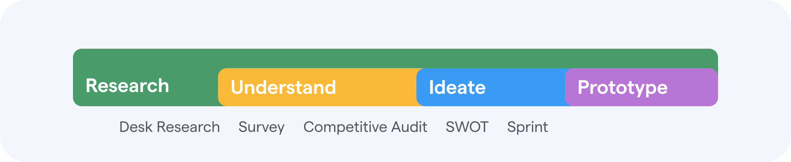
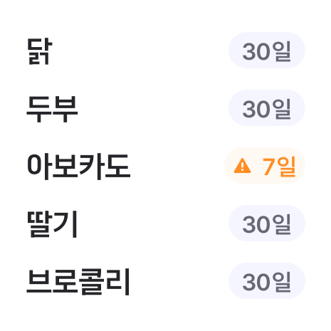
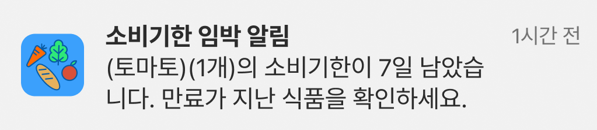
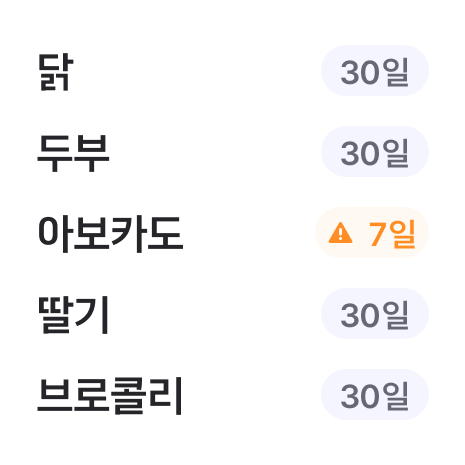
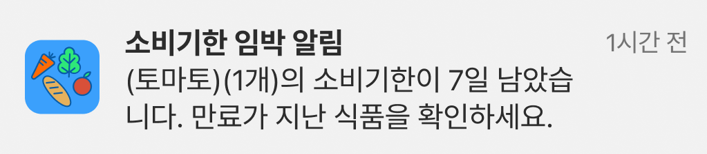
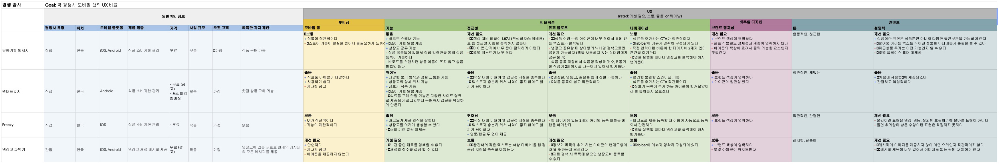
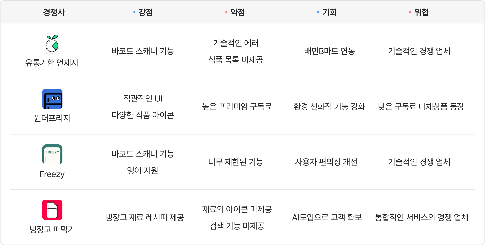
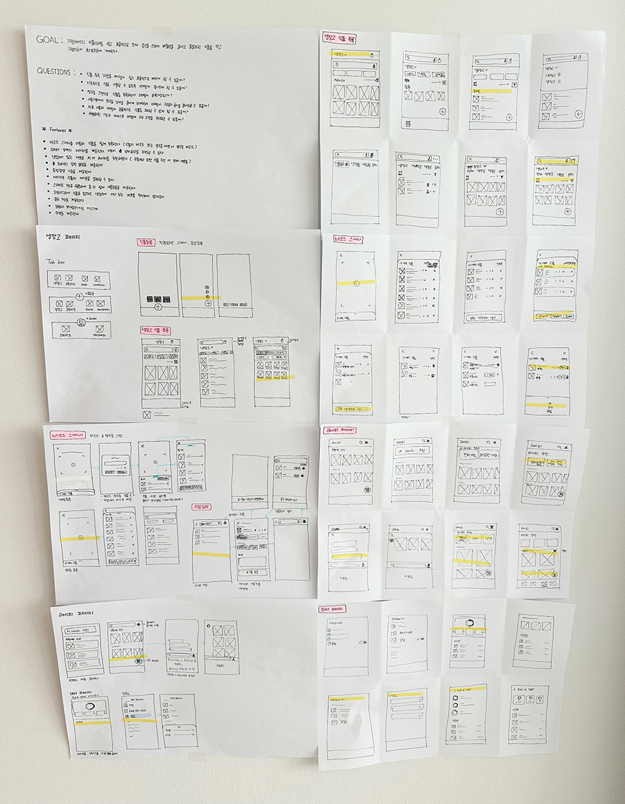

프로젝트 개요
'Cirkle'은 식품의 소비기한을 체계적으로 관리하고 최적의 활용을 도와 불필요한 낭비와 지출을 예방하는 서비스입니다.
- Team
- 개인
- Timeline
- 2024 3 - 4월
- Tools
- Figma, Photoshop
- Role
- UXUI Designer
'Cirkle'은 식품의 소비기한을 체계적으로 관리하고 최적의 활용을 도와 불필요한 낭비와 지출을 예방하는 서비스입니다.
- Team
- 개인
- Timeline
- 2024 3 - 4월
- Tools
- Figma, Photoshop
- Role
- UXUI Designer
문제 진단
어떻게 하면 식품을 효율적으로 관리해 낭비를 최소화하여 불필요한 지출을 예방하고, 또한 환경에 기여 할 수 있을까?
솔루션
식품을 재고에 바코드 스캔으로 간편하게 등록하여 소비기한을 추적합니다. 냉장고에 있는 재료들로 AI가 레시피를 제공하여 기한 임박 재료를 먼저 소비할 수 있습니다. 소비한 식품과 낭비한 식품의 데이터를 제공하여 사용자는 습관을 추적합니다. 또한 푸시 알림과 위젯을 제공하여 사용자에게 소비기한을 상기시켜주고 효율적인 소비를 할 수 있도록 돕습니다.
UX 과정 
최종 프로토타입
식품 등록(직접 입력)
등록된 식품 검색을 통해 냉장고에 등록할 수 있습니다. 제공되지 않은 식품은 개인이 직접 생성하고 수정할 수 있으며 또한 고객에 니즈가 반영된 이미지 수정
기능을 추가해 맞춤화가 가능하게 하였습니다.
식품 등록(영수증 스캔)
영수증의 바코드를 스캔해서 식품 목록을 한 번에 간편하게 등록합니다. 상세 정보(소비기한, 메모)는
개별적으로
작성 아이콘을 클릭하여 입력합니다. 새로 등록된 식품들은 배지로 표시됩니다. 또한 위젯 제공으로 간편하게 냉장고 속 식품을 확인할 수
있습니다.

AI 레시피
소비기한 임박 재료와 전체 재료 중에서 레시피를 추천받을 수 있습니다. 좋아요한 레시피와 AI와의 대화
데이터를 기반으로 개인화하여 추천받습니다.
또한 AI봇을 사용하면 자유롭게 질문하여 레시피를 추천받을 수 있습니다. 초심자 사용자를 위하여 예시로 태그 버튼을 제공합니다.
소비 & 낭비 데이터
최근 6개월 동안 소비한 식품과 낭비한 식품의 데이터를 통해서 습관을 추적할 수 있습니다. 또한 소비기한
임박 푸시 알림을 통해 주기적으로 식품 관리를
상기시키고 낭비를 예방할 수 있습니다.

식품 등록(직접 입력)
등록된 식품 검색을 통해 냉장고에 등록할 수 있습니다. 제공되지 않은 식품은 개인이 직접 생성하고 수정할 수 있으며 또한 고객에 니즈가 반영된 이미지 수정 기능을 추가해 맞춤화가 가능하게 하였습니다.
식품 등록(영수증 스캔)
영수증의 바코드를 스캔해서 식품 목록을 한 번에 간편하게 등록합니다. 상세 정보(소비기한, 메모)는 개별적으로 작성 아이콘을 클릭하여 입력합니다. 새로 등록된 식품들은 배지로 표시됩니다. 또한 위젯 제공으로 간편하게 냉장고 속 식품을 확인할 수 있습니다.
AI 레시피
소비기한 임박 재료와 전체 재료 중에서 레시피를 추천받을 수 있습니다. 좋아요한 레시피와 AI와의 대화 데이터를 기반으로 개인화하여 추천받습니다. 또한 AI봇을 사용하면 자유롭게 질문하여 레시피를 추천받을 수 있습니다. 초심자 사용자를 위하여 예시로 태그 버튼을 제공합니다.
소비 & 낭비 데이터
최근 6개월 동안 소비한 식품과 낭비한 식품의 데이터를 통해서 습관을 추적할 수 있습니다. 또한 소비기한 임박 푸시 알림을 통해 주기적으로 식품 관리를 상기시키고 낭비를 예방할 수 있습니다.
Understand
데스크 리서치
음식물 쓰레기 발생의 원인과 이것이 환경에 미치는 영향에 대한 이해를 높이기 위해 조사를 진행하였습니다. 이 과정에서 가정에서 발생하는 음식물 쓰레기가 전체의 70%를 차지하며, 잘못된 음식 보관과 필요 이상의 식품 구입이 쓰레기 발생의 13%를 차지한다는 것을 확인했습니다. 이러한 결과를 토대로 개인의 식품 낭비를 줄이고 환경보호에 기여하기 위한 목표를 설정하였습니다.
설문 조사
개인의 식품 소비 행태와 인식을 조사하기 위해 설문조사를 진행한 결과, 대다수의 참여자들이 식품 낭비에 대해 고민하고 있으며 이를 줄이기 위해 다양한 노력을 기울이고 있다는 사실을 발견했습니다. 사용 후에 남는 식재료가 가장 큰 낭비의 원인으로 지목되었으며, 또한 낭비를 줄일 수 있도록 도움을 주는 앱 서비스에 대해 긍정적이라는 것을 확인할 수 있었습니다.
경쟁 분석
경쟁사들의 모바일 앱 사용자 경험을 비교하고 각 서비스의 강점, 약점, 기회, 위협을 분석하여 우리 서비스의 전략과 핵심 기능을 발전시킬 수 있는 방향을 도출했습니다.
경쟁사 UX 분석
SWOT 분석
경쟁사 사용자 피드백 분석
앱스토어와 구글 플레이에서 사용자 리뷰를 긍정적, 부정적 평가, 그리고 개선 제안으로 분류하여 이슈의 우선순위를 설정하고 분석했습니다. 이 과정에서 사용자의 핵심 니즈로 소비기한 임박 알림과 냉장고 공유 작성 기능, 다양한 아이콘 제공과 사진을 통한 설정 방법, 그리고 다양한 정렬과 보기 방식 선택으로 도출되었습니다. 결과적으로, 자사서비스는 간편한 식품 등록과 레시피제공을 통한 소비유도라는 핵심 가치를 함께 설정하였습니다.
Ideate
번갯불 데모
또한 해외 시장을 빠르게 탐색하여 다양한 디자인과 핵심기능을 분석했고, 자사 제품에 적용할 수 있는 아이디어를 도출했습니다.
스케치 및 아이디어 결정
제품의 목표를 다시 한번 작성하고 방향을 설정해 핵심 기능을 정리 한 후에 아이디어를 스케치하고, 최종 솔루션을 결정했습니다.
Prototype
최종 디자인